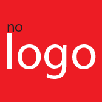
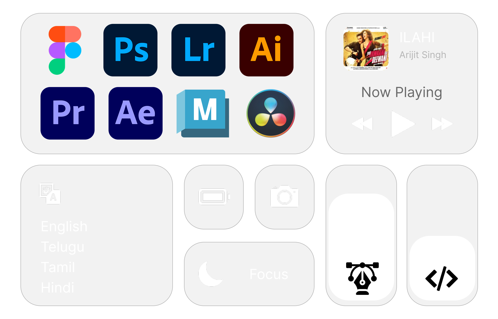

Designing experiences shaped by story, systems, and emotion.
I’m Chethan Talari, a multidisciplinary designer with a background in visual design, storytelling, photography, editing, and filmmaking. My work sits at the intersection of interface thinking and emotional narrative, helping products feel both functional and memorable.
0Years
0Projects
0Clients
Brands that TRUSTED me for
DESIGN & DEV




Skills & Tools

My Timeline
2024
B.Sc Multimedia
Gold Medalist
Gold Medalist
2024
Graphic Designer
Nologo Communications
Nologo Communications
2025
Documentary Filmmaker
CSB, Ministry of Textiles.
CSB, Ministry of Textiles.
2025
Impact Documentary
Mahindra X Croplot
Mahindra X Croplot
2026
Master of Design
NIFT Bangalore
NIFT Bangalore